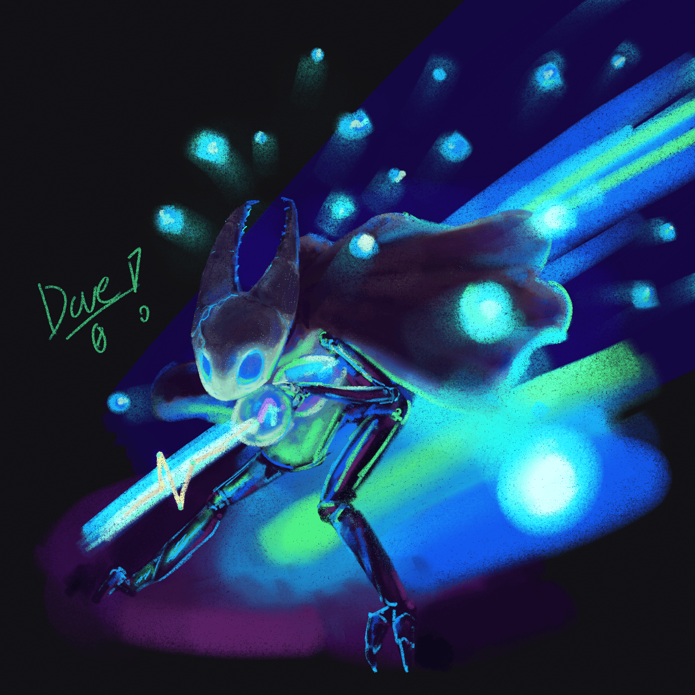

Latest Pics
Latest Pics
A few of my latest finished pieces or WIPs that will (hopefully) be finished soon~

A collection of digital paintings and traditional drawings done by Dove in one place! I draw a variety of subjects, including fan art, original characters, and more!
A few of my latest finished pieces or WIPs that will (hopefully) be finished soon~
Visit the fandom catalogue for organized collections of art by their respective fandoms! Collections include:
This is a list of all the public socials tied to my art pieces. You can also donate at the Kofi link included!
Steve-0 Here: These are a few of my favorite pieces that Dove has done recently. At the time of this writing, it's the middle of October 2025, and Dove is doing a daily challenge of drawing something Silksong related for the duration of October! I hope you enjoy them as much as I do!

Another entry for Silktober 2025
Steve-0 Here: This is probably one of my favorite drawings of Hornet that Dove has done! It was also brought to my attention that Dove draws her in a similar manner to a rabbit.
The first entry for Silktober 2025!
The first entry for Silktober 2025! It's Hornet!
Steve-0 Here: This reminds me so much of a stop motion Tim Burton film.
The first fanart drawn of Hornet from around the release of Silksong!
This was around the time the indie game Silksong was released, and nearly everyone who ever played a video game knew about Hornet.

One of the entries for Silktober 2025
Personally, I quite enjoy this, especially seeing how she uses colors without a strict palette!
